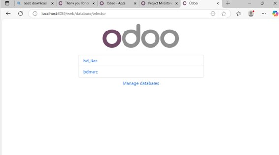

Pasos para restaurar una base de datos en Odoo
Sigue los pasos detallados a continuación para restaurar una base de datos en Odoo:
1. Restaurar la base de datos
Accede a la ruta correspondiente en Odoo y selecciona la opción "Restore Database". Introduce los parámetros necesarios, incluyendo la master password.
2. Confirmar la restauración
Una vez completada la restauración, verifica que la base de datos se ha restaurado correctamente.
3. Seleccionar la base de datos restaurada
Accede al "Database Selector" y selecciona la base de datos que acabas de importar.
4. Iniciar sesión
Introduce las credenciales correspondientes para acceder a la base de datos restaurada. Una vez dentro, podrás trabajar con normalidad.